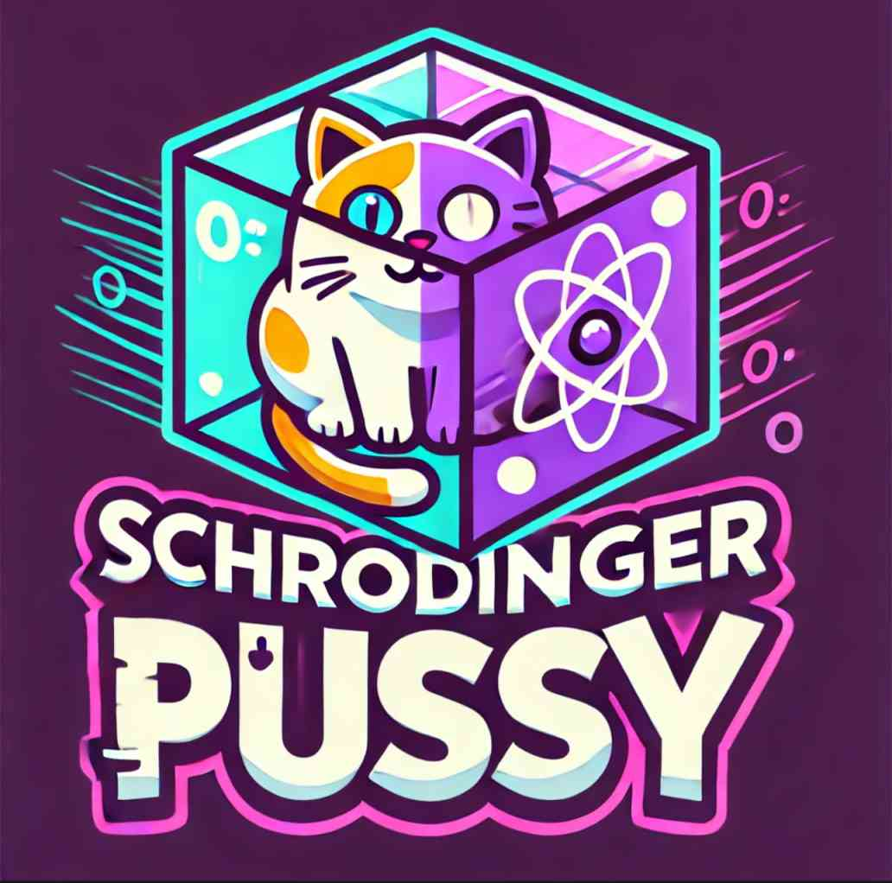

Inspired by the famous Schrödinger’s cat paradox, the meme coin that’s both pumping and not pumping at the same time. Is it going to the moon, or is it stuck in a box? Only time (and you) will tell!
Schrodinger Pussy (SPUSSY) is the ultimate cryptocurrency inspired by quantum uncertainty. Are you ready to embrace the paradox?
Be part of the most quantum and meme-loving community in the crypto space. Follow us on social media and join our Telegram!